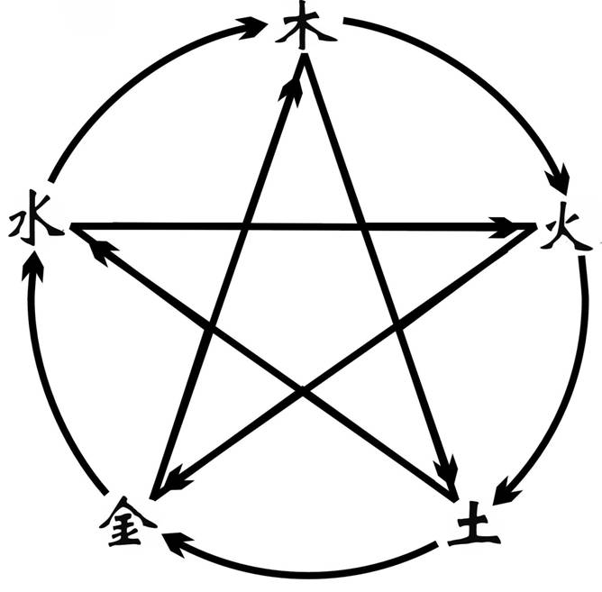
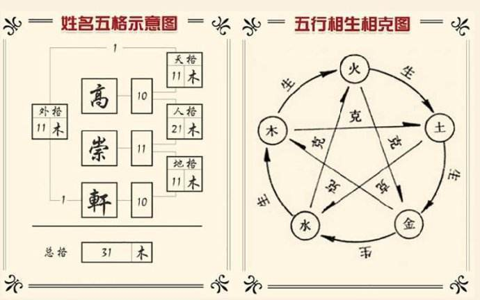

-
给孩子起名不可不知的起名学知识
起名策划，实际上包罗万象、博大精深，包含着政治、文化、习俗、心理等许多内容，对大多数人来说只要注意以下三点就应该能得到满意的名字。此外，当然还有许多字、词和姓名不便或不宜入名。2020-2-28
-

如何简易测名
掌握五行属性；掌握五行生克变化的规律；掌握五格属性及其相互之间的关系；掌握数理的基本诱导内容2020-1-10
-
什么是命理中的八字喜忌？
在八字命理中，经常使用一个专业术语——“喜忌”，这个词在八字命理中很关键，很重要，很实用。因为根据八字喜忌，才可以判断出自己命中适合从事什么样的专业职业，适合跟什么样的人合作，适合向哪个方位发展，适合住什么样的房子，适合用什么样的家具，适合穿什么样的衣服，适合用什么样的颜色，适合佩戴什么样的饰品，以及适合找什么样的对象等等。八字喜忌实际上是一把钥匙，掌握了八字喜忌，就能开启工作生活的方便之门，大部分问题都可以迎刃而解。2019-12-2
-

姓名的三才五格是如何计算的？
三才五格剖象法中，所谓三才，即天才、人才、地才；五格即天格、人格、地格、外格、总格的总称。它们的配置组合，反映综合内在运势。五行之间的关系是：木、火、土、金、水相临相生，相隔相克。这样，根据数理与五行之间的内在联系，推算出来的配置关系即为三才配置，三才的生克关系在姓名学中是极为重要的，它影响一个人的健康、情感、生活、事业多方面的优劣吉凶。2019-10-23
-

公司企业命名知识大全
企业起名的技巧；企业起名几种类型；公司取名的禁忌；给企业或公司命名的几点注意事项2019-9-1